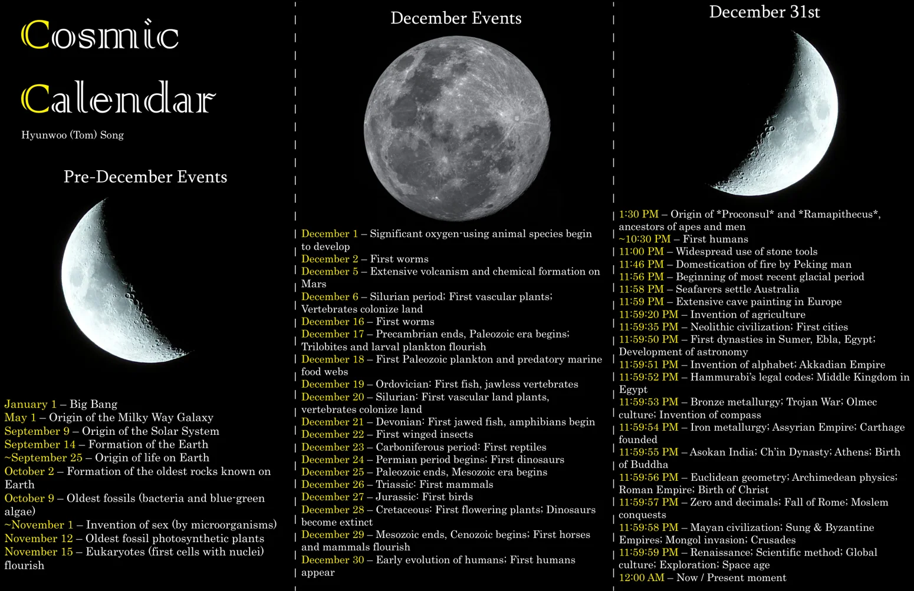

DES 149 · INFORMATION DESIGN · COURSEWORK
Cosmic Calendar
An information graphic compressing cosmic history into a calendar, using typographic hierarchy to communicate scale and time.

01 / INFORMATION HIERARCHY
Translate immense time into a readable structure
The final graphic organizes a cosmic timeline using Pre-December, December, and December 31st sections. Moon imagery, restrained yellow-on-black text, and columns help separate the timeline into digestible levels. The design visualizes a sourced chronology rather than claiming to produce original astrophysics data.

ORIGINAL MATERIALS